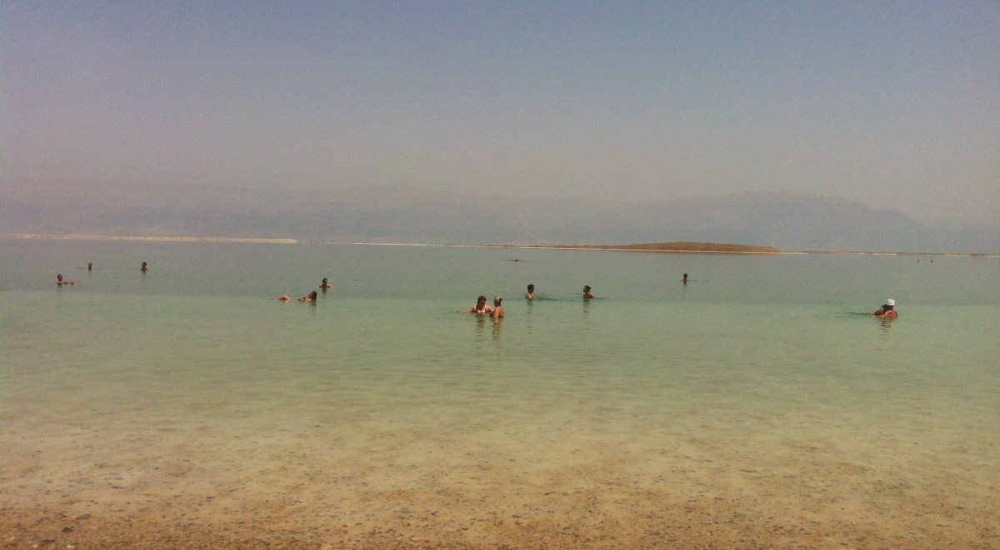
מתוך השידור "צפון ים המלח", מערכת השידורים הלאומיתחבל ים המלח ומדבר יהודה · נושא 1
ים שבו צפים בלי לשחות, בוץ ומעיינות חמים, ואקלים שמרפא מחלות עור. אבל גם ים שמתייבש ואדמה שנפערת. בנושא הזה נבין מה מושך את התיירים לים המלח, ואיך מפתחים אותו בלי להרוס אותו.
תעודת זהות
ים המלח נמצא בקצה הדרומי של בקעת הירדן, על הגבול עם ירדן. פני המים שלו הם המקום הנמוך ביותר על פני כדור הארץ: לפי הספר כ־417 מ׳ מתחת לפני הים (נתון משנת 2006). מאז המפלס ירד עוד, והיום הוא נמוך מ־430 מ׳.הרחבה
הים שוכן בבקע שנוצר לאורך השבר הסורי־אפריקני.הרחבה
| כיוון | הגבול |
|---|---|
| צפון | בקעת יריחו |
| דרום | כיכר סדום |
| מזרח | ים המלח |
| מערב | הרי יהודה |
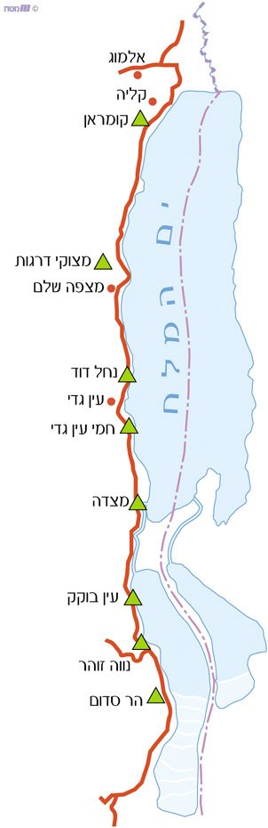
הנוף
גבעות בגובה 200–600 מ׳, שיורדות בהדרגה מזרחה. זה מדבר יהודה.
מצוק ההעתקים: קיר תלול עם קניונים, והפרש גובה של כ־600 מ׳. כאן נמצאים הנחלים והמפלים.
רצועה צרה לחוף הים. היא מתרחבת, כי הים נסוג. כאן הכבישים, המלונות והחופים.
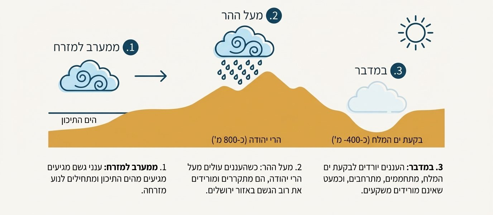
שני אגנים
לים המלח היו שני אגנים, שהפרידה ביניהם לשון יבשה. בגלל ירידת המפלס הם נפרדו:
מלונות עין בוקק וחמי זוהר שוכנים לחוף בריכות האידוי של האגן הדרומי.הרחבה
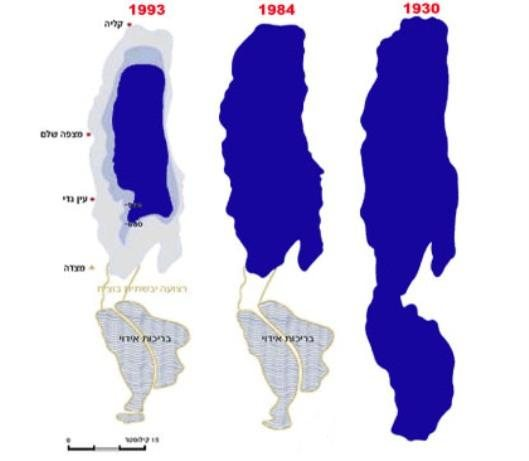
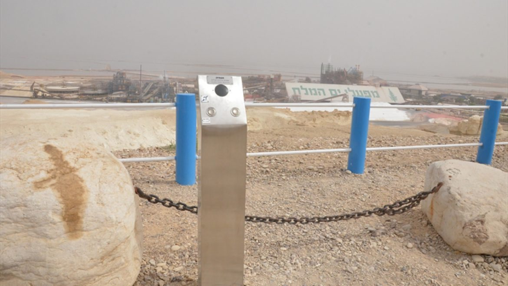
עצירה לתרגול · עונים בסטודיו
אתר: חוף ים המלח
מה עושים: צפים על המים, מתמרחים בבוץ, נהנים מספא. חוויה שאין בשום מקום אחר בעולם.
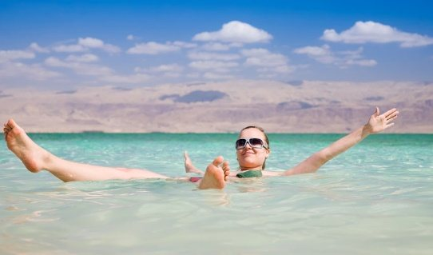
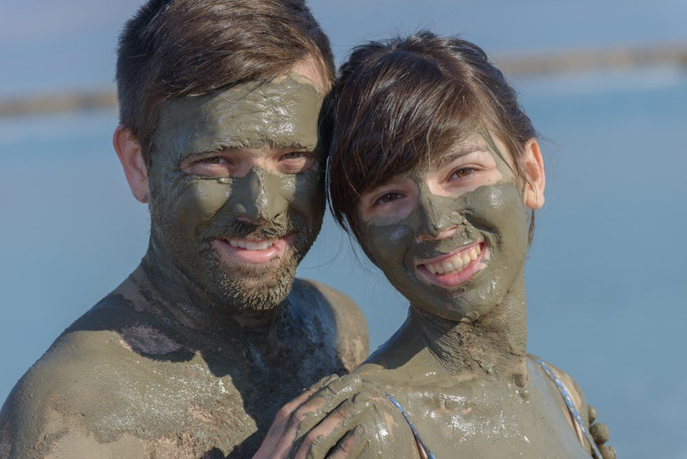
תיירות מרפא
האקלים, המים, הבוץ והמעיינות מקלים על מחלות עור ומפרקים. לכן התפתחה בים המלח תיירות מרפא, שמבוססת על משאבי הטבע.
תיירות הפסוריאזיס:
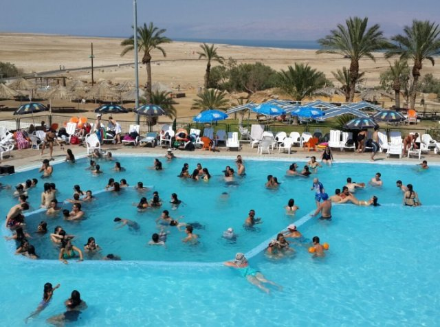
נשאל בבגרות 2023: "ציין שתי סיבות להתפתחות תיירות מרפא ייחודית באזור ים המלח".
אתר: עין בוקק וחמי זוהר
מתחם התיירות המרכזי בצד הישראלי של ים המלח. לפי הספר כ־3,500 חדרי מלון, רובם ברמה של 5 כוכבים. היום יש בו כ־15 מלונות וכ־4,000 חדרים.הרחבה
במלונות ספא, בריכות מים מינרליים וטיפולים, ומולם חוף ציבורי.
אין עורף עירוני: אין עיר גדולה ליד המלונות. הכי קרוב:
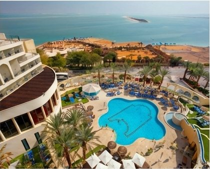
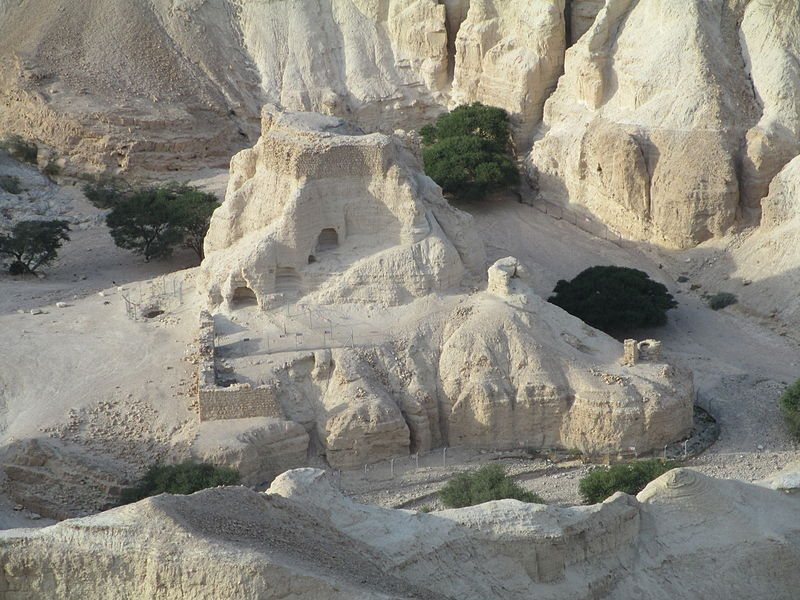
עצירה לתרגול · עונים בסטודיו
ים שמתייבש
למה המפלס יורד: נכנסים לים פחות מים ממה שמתאדים ממנו. מעט מאוד מים מגיעים מהירדן, כי עוצרים אותם בדרך (למשל בסכר דגניה) ומשתמשים בהם לחקלאות ולשתייה. בנוסף, מפעלי האשלג בישראל ובירדן מאדים כמויות גדולות של מים בבריכות.
איך נוצר בולען:
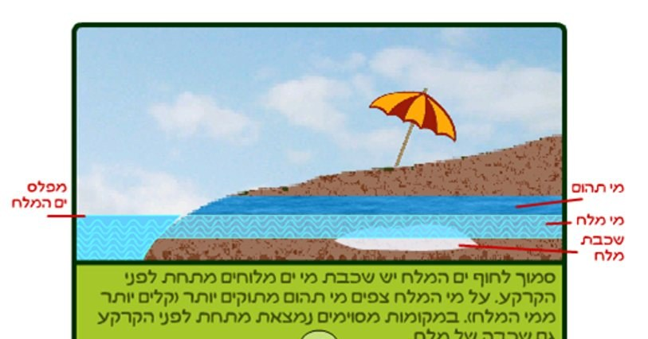
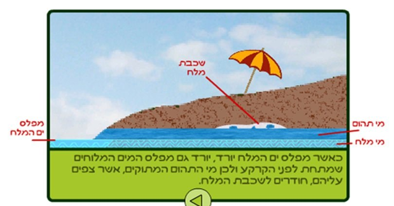
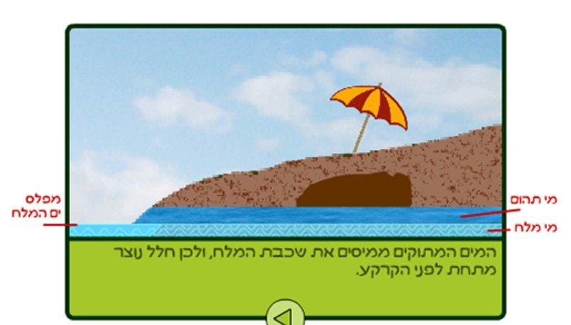
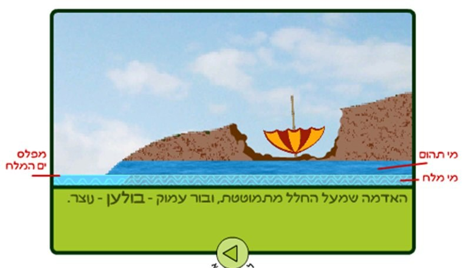
התרשימים מתוך השידור "צפון ים המלח", מערכת השידורים הלאומית.
אתר: פארק הבולענים
בולענים הם בורות שנפערים בקרקע באופן טבעי. הם נפתחים פתאום, בכבישים, בחופים ובמטעים, ולכן הם מסכנים את המבקרים ומגבילים את הפיתוח. חופים ומתקנים נסגרו בגללם.
אבל בעקבות התופעה התפתח גם אתר תיירות חדש: פארק הבולענים, שבו מסיירים ורואים את הבולענים מקרוב, בדרכים בטוחות.
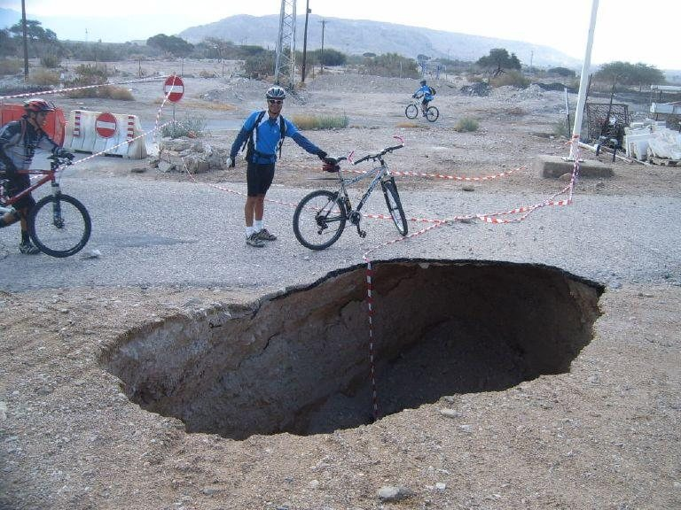
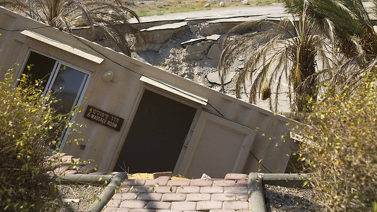
נשאל בבגרות 2023: "מהו בולען, כיצד הוא נוצר, ואיזה אתר תיירות חדש התפתח בעקבות התופעה".
פיתוח
תשתיות שצריך לפתח (מחוון 2021):
את חוף המלונות משקמת ומפתחת החברה הממשלתית להגנות ים המלח.הרחבה
תיירות שדואגת לשימור ולפיתוח של אתרי תיירות בלי לפגוע בסביבה. הפיתוח מתוכנן, עם תשתיות מתאימות, כדי שיוכל להתקיים זמן רב.
בים המלח זה חשוב במיוחד, כי יש בו אוצרות טבע ותופעות שאין בשום מקום אחר. ירידת המפלס והבולענים מראים מה קורה כשמנצלים משאב בלי תכנון.
השיעור המקסימלי של השימוש שאפשר לעשות באתר או במשאב, בלי לפגוע בתדמיתו או באפשרות להשתמש בו באותה צורה בעתיד.
בים המלח: אם יבנו עוד ועוד מלונות בעין בוקק, יחסרו מים, יהיו יותר שפכים, החוף יהיה צפוף והחוויה תיפגע.
בבגרות 2021 שאלה 9 עסקה כולה בפיתוח ים המלח: כושר נשיאה, תשתיות ותיירות בת קיימא.
פיתוח
שאלון ישן, שאלה 6: פעולות פיתוח לאורך החוף, פעולות של המדינה ודרכים להגדלת התיירות. המקור: השידור "צפון ים המלח", מערכת השידורים הלאומית.
קהלי יעד
בעיקר מגרמניה, שווייץ ואוסטריה, לטיפול במחלות עור. שוהים כ־28 יום, ולכן ממלאים את המלונות לאורך כל השנה.
ישראלים ותיירים מחו״ל שבאים לנוח במלונות עין בוקק וחמי זוהר, לרחצה בים ולספא.
תיירות נכנסת וקבוצות מהארץ שמגיעות למצדה ולקומראן, הרבה פעמים כמבקרי יום.
משפחות ותלמידים שמטיילים בשמורת עין גדי, בנחל דוד ובנחל ערוגות.
מטיילים מנוסים בקניונים ובמצוקים של מדבר יהודה.
נוצרים שמבקרים באתרים הקשורים לסיפורי התנ״ך והברית החדשה בבקעת יריחו ובמדבר.הרחבה
שאלה ממאגר הבגרות: ציינו שלושה פלחי שוק שמגיעים לחבל, ומה מושך כל אחד מהם. ובשאלון ישן: למה ים המלח הוא מהיעדים הפופולריים בארץ? כי יש בו משהו לכל אחד מהקהלים: מרפא, נופש, היסטוריה, טבע ואתגר.
אתר: מפעל אהבה · מצפה שלם
מפעל אהבה מייצר מוצרי טיפוח מהבוץ והמינרלים של ים המלח. במרכז המבקרים במצפה שלם אפשר לראות את תהליך הייצור, לצפות בסרטון שמסביר אותו ולקנות מוצרים בחנות.
תיירות שמבוססת על העניין של אנשים בתהליך הייצור במפעלים: סיור מודרך, מפגש עם העובדים בזמן העבודה, הסבר על שלבי הייצור, ובדרך כלל חנות בסוף.
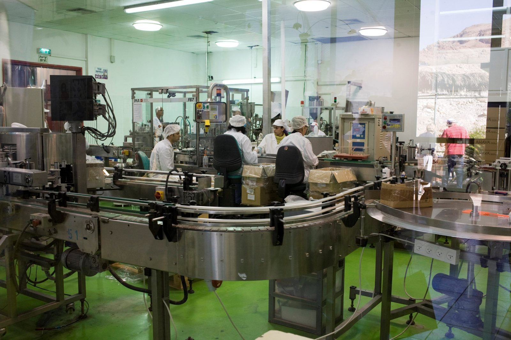
לפי מחוון 2026: במרכז המבקרים של מפעל אהבה רואים את תהליך הייצור ומתרשמים מהמוצרים.
מושגים ושאלות סיכום · עונים בסטודיו
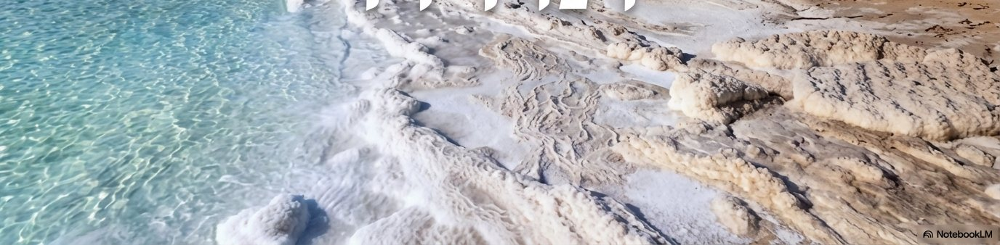
מתוך מצגת ים המלח של המגמה (NotebookLM)לסיום
בנושא הבא: מדבר יהודה, טבע ונופש פעיל.